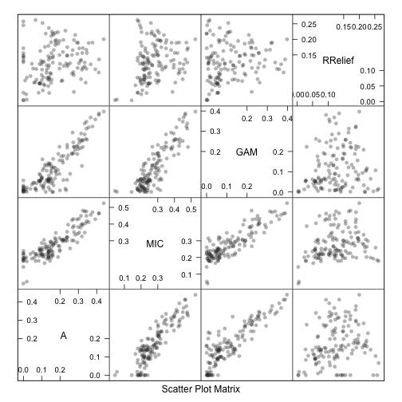

In Chapter 18, we discuss a relatively new method for measuring predictor importance called the maximal information coefficient (MIC). The original paper is by Reshef at al (2011).
A summary of the initial reactions to the MIC are Speed and Tibshirani (and others can be found here). My (minor) beef with it is the lack of a probabilistic motivation. The authors have some general criteria (generality and equitability) and created an algorithm that seems to good in terms of these properties. The MIC clearly works, but what is it really optimizing and why?
It reminds me of partial least squares. The algorithm made intuitive sense and obviously worked, but it was a while before anyone actually figured out what mathematical problem it was solving. A similar statement could be made about boosting when it was first developed.
Murrell et al (2013) (or Murrell3?) has a similar generalized measure of association between continuous variables. There’s is based on a generalized notion of R2 that I’d never heard of. At first glance, it has a lot of attractive properties. One is that is has a probabilistic genesis. Another nice quality is that the association can be computed while controlling for other data. That is a big deal for me, since we often have experiments where we need to control for nuisance factors. For example, if you were trying to measure the relationship between the selling price of a house and the acerage of the lot, you might want to control for other factors, such as the type of terrain or geography (e.g. urban, rural etc).
Despite the probabilistic motivation, they take a randomization approach to making formal statistical inferences on significance of the measure. The same could be done for the MIC measure (and in the book, we used the same idea for Relief scores). I think a confidence interval would be better for everyone since it directly tells you the uncertainty and the size of the association (that’s another post for another time for a topic that has been discussedquiteabit).
Let’s look at some data. I like the blood-brain barrier data a lot. It has measurements on 208 drugs to see how much (if at all) they enter the brain. The predictors are molecular descriptors (similar to the solubility example in the book). To get the data:
First, I’ll measure association using the A measure discussed in Murrell3:
library(matie)## Compute the associations across all columns of the predictorsAvalues <-apply(bbbDescr, 2, function(x, y) ma(cbind(x, y))$A, y = logBBB)Avalues <-sort(Avalues, decreasing =TRUE)head(Avalues)
So the best predictor only explains 43.9% of the variation in the outcome. Most of the predictors shown above are related to surface area, which makes sense: the larger the molecule the less likely it is to physically fit through the barrier.
What does MIC tell us?
library(minerva)## There are three predictors whose scales have very low variances. We## need to reset the threshold that checks for thismic <-mine(bbbDescr, logBBB, var.thr =1e-10)$MICmic <- mic[, "Y"]names(mic) <-colnames(bbbDescr)mic <- mic[order(mic, decreasing =TRUE)]head(mic)
There are some differences but the top predictor from A is still at the top. The MIC values is sort of a correlation-like measure and our best value was 0.52.
I also have a measure of importance that is based on scatterplot smoothers. A loess smoother is fit between the outcome and the predictor and the R2 statistic is calculated for this model against the intercept only null model. I don’t claim that there is any justification (which is why I’ve never published it) for this but it has worked for me in the past. This is similar to my statements about MIC and PLS. I still use them because they tend to work, but I’ve no theoretical leg to stand on.
## A measure based on regression smoothersgamImp <-filterVarImp(bbbDescr, logBBB, nonpara =TRUE)gamImp <- gamImp[order(gamImp$Overall, decreasing =TRUE), , drop =FALSE]head(gamImp)
Finally, I’ll compute the RRelief scores. We discuss this in the book and the a good reference is here. It uses a nearest-neighbor approach and measures the importance of each predictors simultaneously (all of the other methods show here measure each association in isolation).
library(CORElearn)## The function only uses the formula interfacebbbData <- bbbDescrbbbData$logBBB <- logBBBset.seed(10)RRelief <-attrEval(logBBB ~ ., data = bbbData, estimator ="RReliefFbestK", ReliefIterations =100)RRelief <- RRelief[order(RRelief, decreasing =TRUE)]head(RRelief)
This score ranks the variables differently than the other methods. This is most likely due to the difference in philosophy in measuring association between this method and the others as well as the high degree of correlation between the predictors in these data.
Overall, do these metrics correlate?

If you ignore RRelief, there is some association between measures of association. Interestingly, there are a few predictors that have zero association using the A measure but non-zero correlation using MIC. The variables, and their MIC values are: peoe_vsa.2 (0.22), slogp_vsa4 (0.2), peoe_vsa.0 (0.19), smr_vsa1 (0.18), a_acid (0.18), peoe_vsa.2.1 (0.14) and negative (0.04). What do these look like? Here are scatterplots between these predictions and the outcome (with scatterplot smoother fits):
Several of these are “near zero variance” predictors and probably shouldn’t be evaluated. For this image, it is difficult for me to see the association between the response and peoe_vsa.0 (MIC = 0.19) or smr_vsa1 (MIC = 0.18).